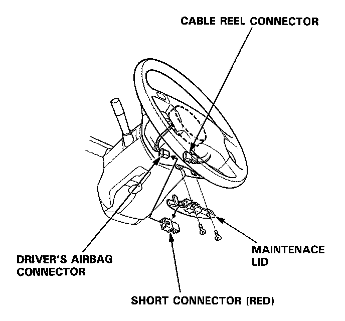
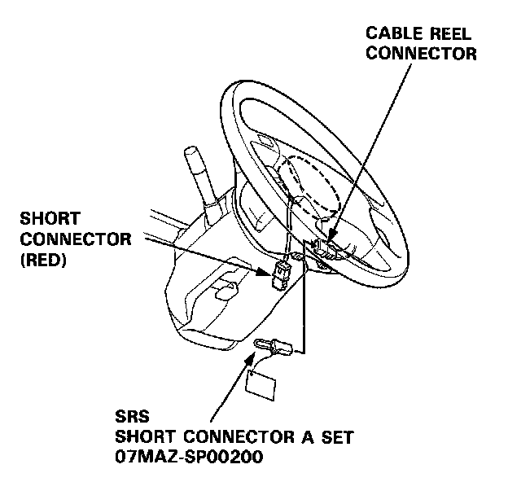
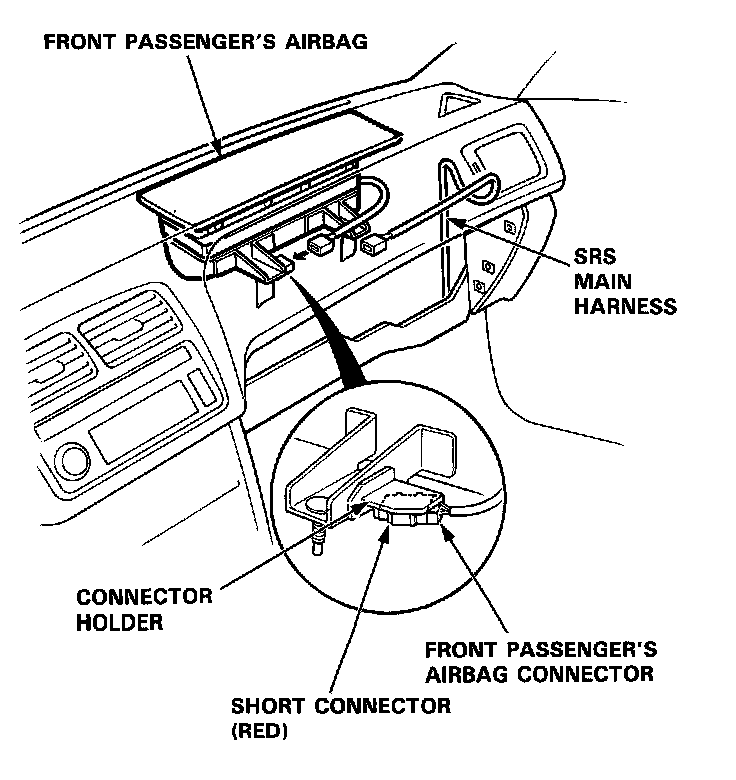
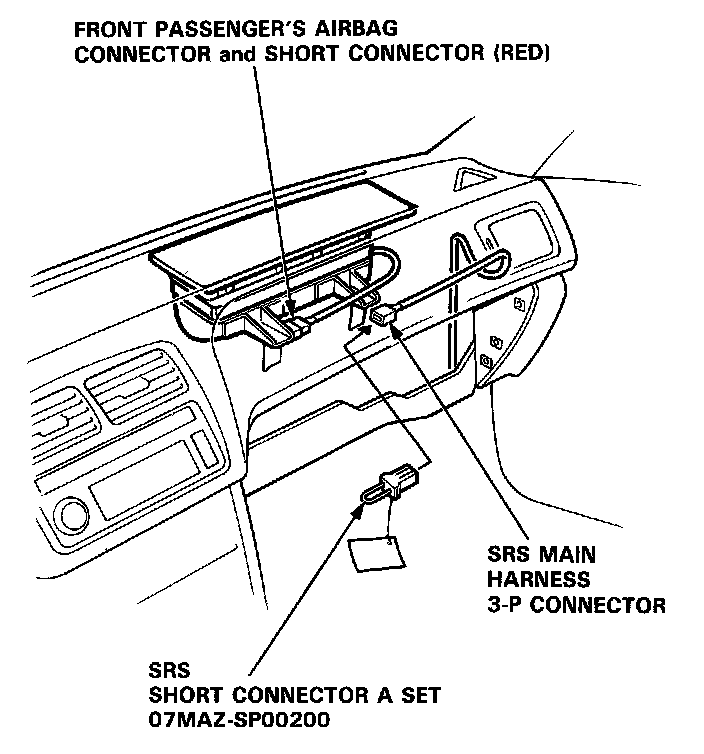
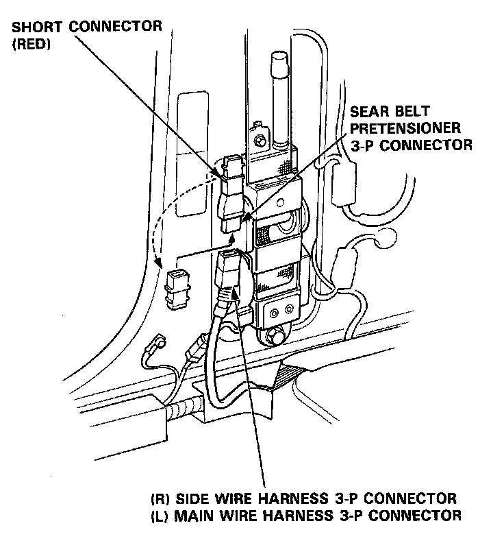

Air Bag(s) Arming and Disarming: Service and Repair
Short Connector Installation
CAUTION:
- Before disconnecting the airbag connector(s), turn off the ignition switch and wait for at least 3 minutes to let the capacitor in the back-up circuit discharge. This will prevent a malfunction of the seat belt pretensioners.
- After completing repair work, be sure to remove both short connectors.
NOTE: Before disconnecting the battery cable, be sure you get the customer's anti-theft radio code number.
1. Disconnect the battery negative cable, then disconnect the positive cable.
2. Remove the maintenance lid below the driver's air- bag, then remove the short connector (RED).

3. Disconnect the connector between the airbag and cable reel, then connect the short connector (RED) to the airbag side of the connector.
4. Connect SRS short connector A to the cable reel side of the connector.

5. Remove the glove box, then disconnect the connector between the front passenger's airbag and the SRS main harness.
6. Connect the short connector (RED) to the airbag side of the connector.

7. Connect the SRS short connector A to the SRS main harness half of the 3-P connector.

8. Remove the quarter trim panel.
9. Remove the short connector (RED) from the short connector holder.
10. Disconnect the seat belt pretensioner 3-P connector, then connect the short connector (RED) to the seat belt pretensioner half of the connector.
